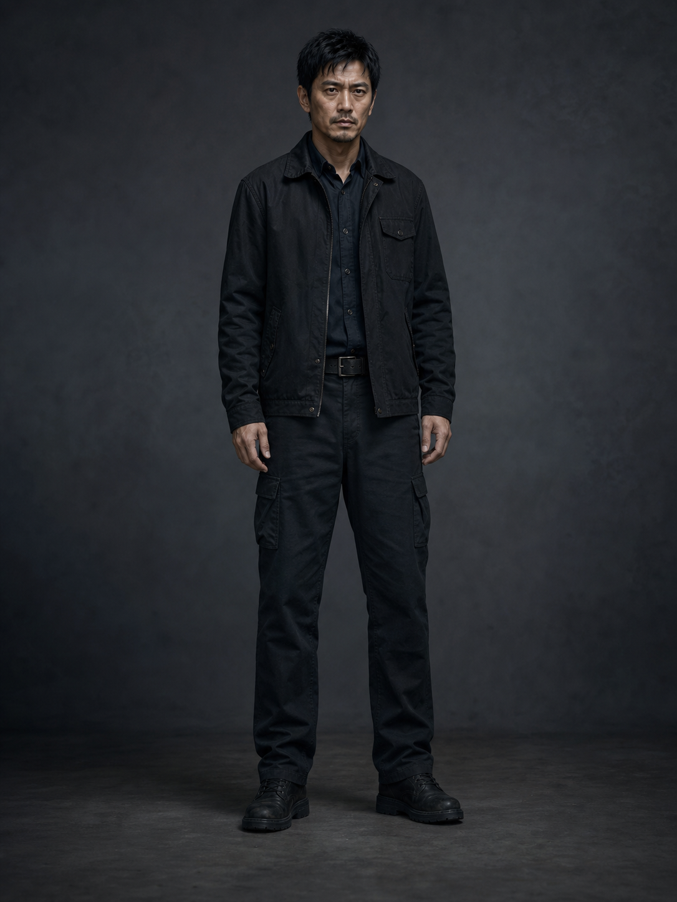
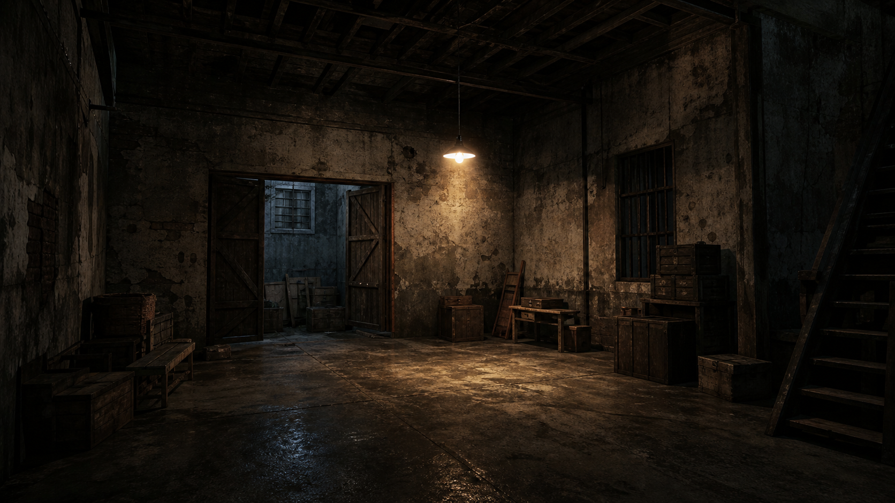

原文完成2025-05-18
剧本已确认2025-05-19
分镜已确认2025-05-19
资料与资产ready
Shot Prompt 当前 revisionv3
Agnes 生成当前步骤
结果与重跑已有 Job
自动轮询中；刷新间隔来自运行时策略
RPM 限制：队列会按 provider 限流策略提交
restart_recovery_in_progress：启动后检查 queued/submitted/polling 任务
recovered_after_restart：应用重启后已恢复 3 个未完成任务：2 个继续自动处理，1 个需要人工检查。
submission_outcome_unknown：1 个任务状态无法确认，未计入恢复成功。
可生成镜头
| 选择 | shot_id | 就绪状态 | Prompt 版本 | 资产状态 | 模式（schema） | 时长（schema） | 任务状态 | 当前结果 | 最后更新时间 | 操作 |
|---|---|---|---|---|---|---|---|---|---|---|
| 1-01 | ready | v3 | ready | 标准 | source | completed | v3 当前 | 14:32:11 | ||
| 1-02 | ready | v3 | ready | 标准 | source | queued | - | 14:32:08 | ||
| 1-03 | ready | v3 | ready | 标准 | source | submitting | - | 14:32:05 | ||
| 1-04 | ready | v3 | ready | 标准 | source | generating | - | 14:32:04 | ||
| 1-05 | ready | v3 | ready | 标准 | source | completed | v2 | 14:31:55 | ||
| 1-06 | ready | v3 | ready | 标准 | source | failed | - | 14:31:49 | ||
| 1-07 | blocked | v2 | 缺少资产（角色） | 标准 | source | waiting | - | 14:31:44 | ||
| 1-08 | blocked | v3 | 缺少 Prompt | 标准 | source | waiting | - | 14:31:40 | ||
| 1-09 | ready | v3 | ready | 标准 | source | cancelled | - | 14:31:20 |
当前镜头输入预览：1-01
可提交 / 已有结果Prompt（来源 v3）
夜晚的湿滑小巷，雨后地面反光，男主穿深色外套在招牌旁快速行走，远处霓虹灯微亮，氛围紧张。
Negative Prompt
禁止换脸、错服装、多人畸变、文字乱码、logo、水印、低清晰度。
资产参考（4）




Agnes 参数
画幅：16:9
参数字段：仅显示后端 provider capability / API schema 支持的值
未确认字段：不在前端硬编码展示